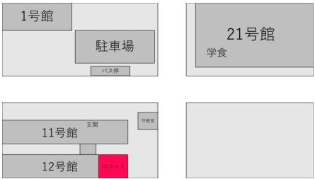

Modern Adonis Jazz Orchestra
MAJO
Modern Adonis Jazz Orchestra
Top
About
Schedule
Bands
Contact
- News -
ソロバトルに参戦! @Noel 11月13日
音で話そう
― Jazzの特徴であるアドリブを使い、自分自身を音で表現しよう ―
金沢工業大学 軽音楽部はコンボ形式という3～6人編成のバンドを中心として、Jazz、R&B、Funkなどの音楽に親しみながら演奏技術の向上を目指して活動しています!
Follow Us
Tweets by KIT_MAJO
Access
活動場所:南校地12号館4階イノベーションホール
